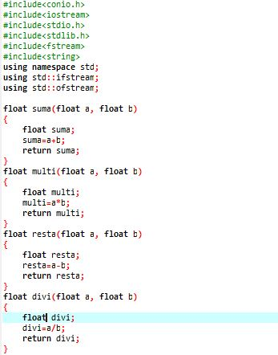

actvidad de repaso


Aunque esta actividad no es califcable creo que vale la pena hacer un buen repaso para estar preparados para los siguientes trabajos, puede que esta forma que use sea muy larga pero la verdad despues de mucho pensar no encontre otra forma para realizarlo, este tema me parce bastante util pues nos ayuda a ahorrar muchas lineas de codigo.